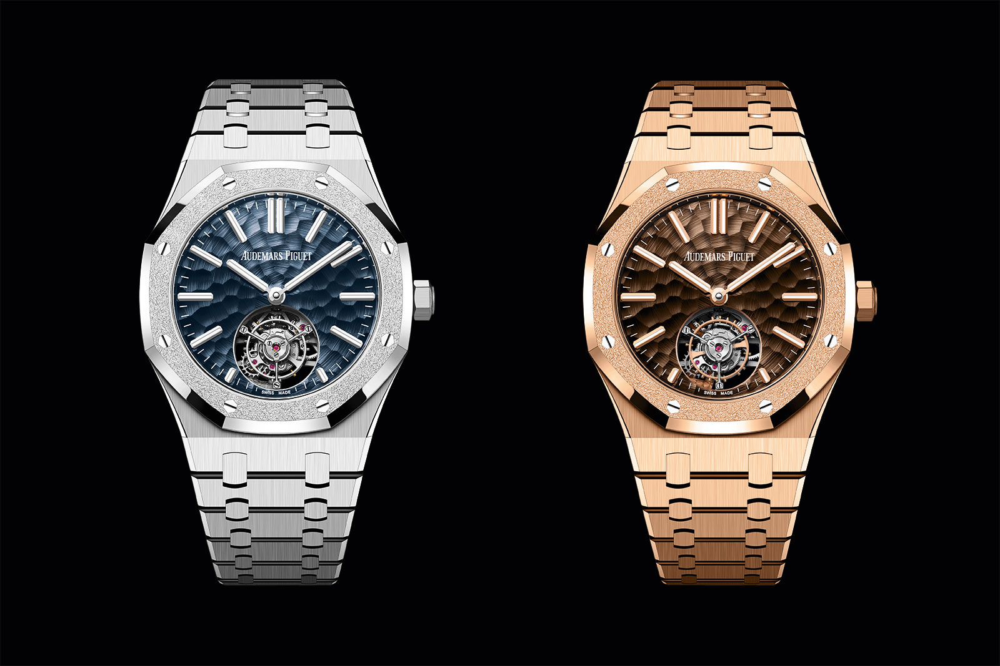
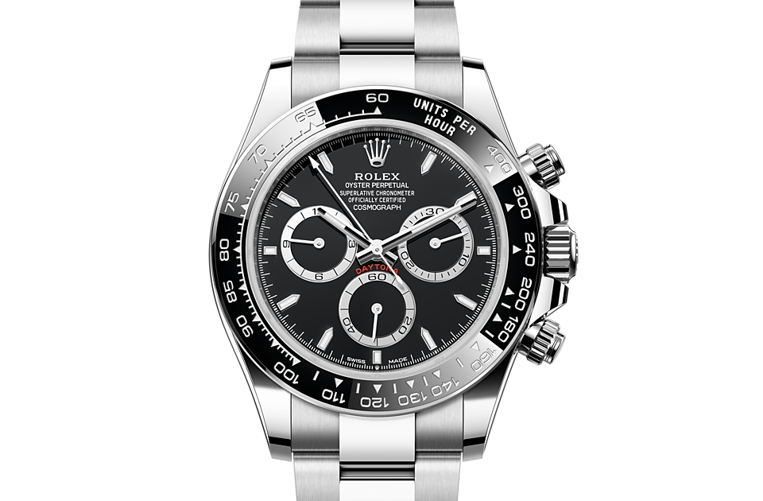
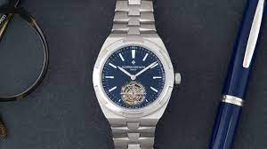
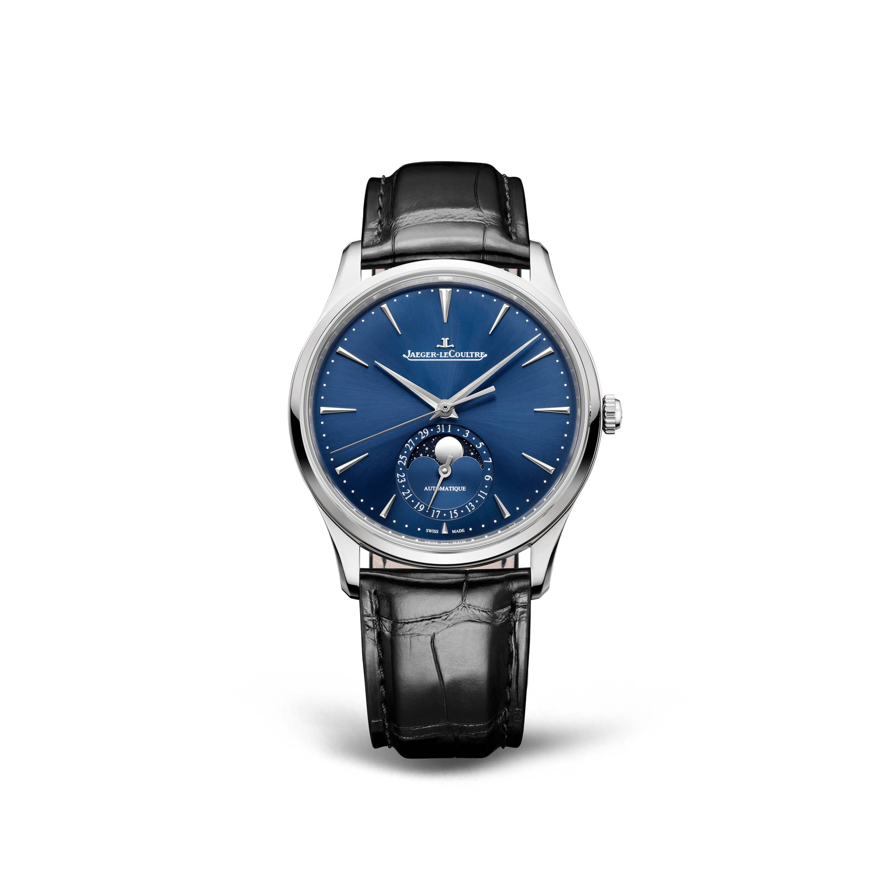

Surfing

Surfing is something I've done my whole life. You can catch me at County Line, Heavens, Zero's, or Hunnington Pier when I visit my grandma in Newport Beach 🤙🏻
| |
|
|
I've recently been obsessed with chess. Feel free to add me on chess.com. My user name is: runnrxlft...I'm prone to make many blunders 😁
Surfing is something I've done my whole life. You can catch me at County Line, Heavens, Zero's, or Hunnington Pier when I visit my grandma in Newport Beach 🤙🏻

If you can't already tell by my chess name (runnrxlft), I love to run and lift. Lifting at the gym is something that is new to me but something I've been gravitating towards lately over running. My favorite movements are squats and deadlifting 💪🏻
|  |  |  |  |
Watches are something that I've always had a interest in. It started from my dad who got me into them at a young age and gifted me with a nice watch when I graduated college. I am trying to convince my wife I am not crazy and have her appreciate my lame hobby of watch collecting. I am hoping the next watch I can add to my collection is a Rolex GMT Master II reference 126720VTNR (my dream watch since I am a lefty) ♛

Not really a hobby but I married the girl of my dreams on March of 2020. In fact, she was my elementary school crush. We both went to a small, private Christian school (30 people in our class) and overlapped from 2nd to 6th grade. She went to a public school in middle school and we never saw eachother until 2018 where we both met at a local bagel shop, East Coast Bagel. I proposed to her in Montepulciano, Italy. Right after our honeymoon, shelter in place hit! 👩🏻❤️👨🏻